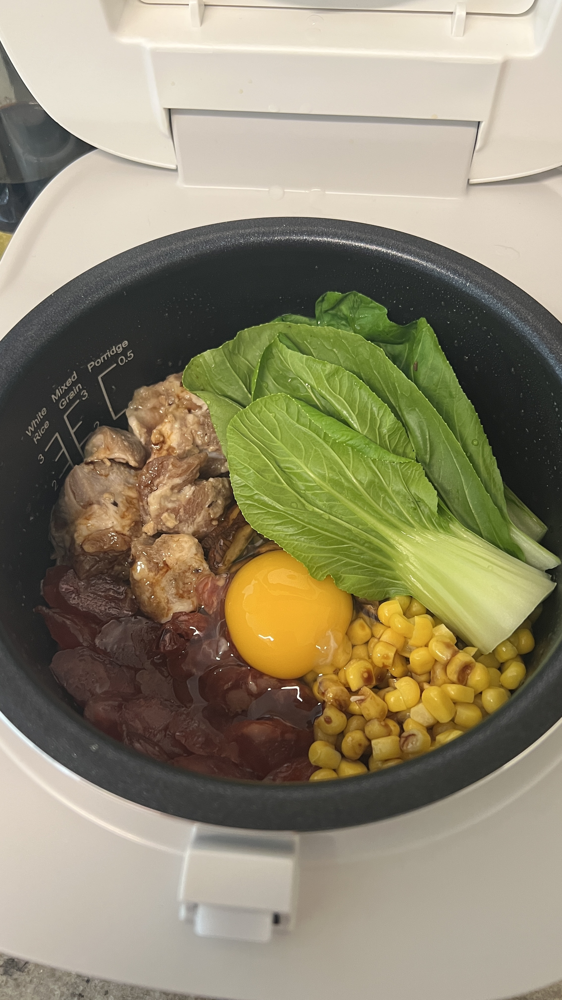

Home

Bao Zai Fan
Feeling Sarcastic Today
🙄 🙄 🙄
Receipe
Ingredients
· 1" piece ginger, peeled, finely chopped
· 2 garlic cloves, finely chopped
· 2 Tbsp. soy sauce
· 1 tsp. dark soy sauce (see Cook's note)
· 2 tbsp. Shaoxing wine (Chinese rice wine) or dry sherry
· 2 tsp. cornstarch
· 1 tsp. oyster sauce
· 1 tsp. sugar
· ¼ tsp. freshly ground white pepper
· 1lb. skinless, boneless chicken thighs, cut into 1½" pieces
· 8 dried or fresh shiitake mushrooms
· 2 tsp. vegetable oil
· 2 lap cheong (Chinese sausages), casings peeled, sliced ¼" thick
· 1 cup jasmine rice
· 1½ cups low-sodium chicken broth
· 3 small heads baby bok choy, leaves separated
· 1 scallion, thinly sliced on a diagonal
Preparation
Step 1
· Whisk together ginger, garlic, both soy sauces, wine, cornstarch, oyster sauce, sugar, and white pepper in a medium bowl. Add chicken pieces and toss to coat. Cover and chill at least 1 hour and up to 12 hours.
Step 2
· If using dried shiitake mushrooms, place in a small bowl and pour in hot water to cover by a few inches (you can use a small plate to help them stay submerged). Let mushrooms soak until caps are tender, at least 20 minutes. Squeeze out excess water with your hands.
Step 3
· Trim any tough stems from dried or fresh mushrooms; discard. Halve caps, or slice if large.
Step 4
· Heat oil in a medium clay pot or Dutch oven over medium-high heat. Add Chinese sausage and cook, stirring occasionally, until browned and crispy, about 2 minutes. Using a slotted spoon, transfer to a plate. (Leave fat in pot for cooking the rice.)
Step 5
· Pour rice into same pot and cook over medium-high heat, stirring to coat in fat, until fragrant, about 1 minute. Add broth and bring to a boil. Reduce heat to medium-low, cover, and simmer, reducing heat to low if you see a lot of steam escaping, 10 minutes.
Step 6
· Remove lid from pot (rice will be only partially cooked) and top rice with marinated chicken along with any marinade, spreading out pieces in an even layer. Add mushrooms and cooked sausage. Cover pot, increase heat to medium, and cook until rice is tender and beginning to turn crispy and smells nutty, 8-10 minutes. Reduce heat to medium-low and continue to cook, arranging bok choy on top of rice 3 minutes before removing from heat, 5-7 minutes longer. Remove from heat and let sit (still covered) 10 minutes.
Step 7
· Top chicken and rice with scallions and serve, scraping up some of the crispy rice with each serving.
Done!